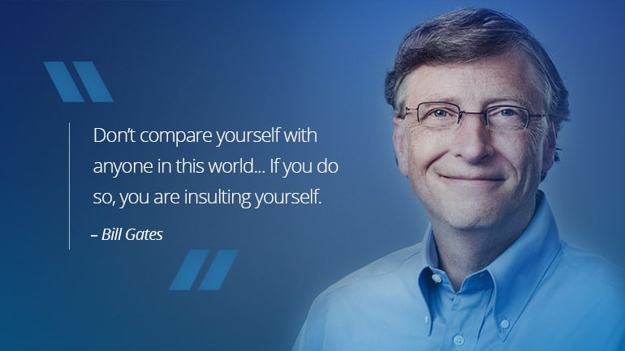
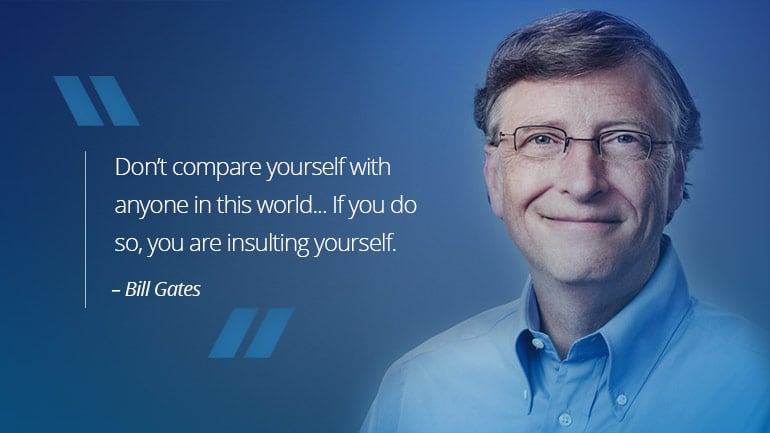

About Meüë®üèæ‚Äçüíª

I AM BILL GATES
William Henry Gates III (born October 28, 1955) is an American businessman, investor, philanthropist, and writer best known for co-founding the software giant Microsoft, along with his childhood friend Paul Allen. During his career at Microsoft, Gates held the positions of chairman, chief executive officer (CEO), president, and chief software architect, while also being its largest individual shareholder until May 2014.[4] He was a major entrepreneur of the microcomputer revolution of the 1970s and 1980s. William Henry Gates III was born on October 28, 1955, in Seattle, Washington[3] as the only son of William H. Gates Sr.[b] (1925–2020) and his first wife, Mary Maxwell Gates (1929–1994).[23] His ancestry includes English, German, and Irish/Scots-Irish.[24] His father was a prominent lawyer, and his mother served on the board of directors of First Interstate BancSystem and United Way of America. Gates's maternal grandfather was J. W. Maxwell, a national bank president. He also has an older sister Kristi (Kristianne) and a younger sister Libby. He is the fourth of his name in his family but is known as William Gates III or "Trey" (i.e., three) because his father had the "II" suffix.[25][26] The family lived in the Sand Point area of Seattle in a home that was damaged by a rare tornado when Gates was seven years old. Read more...


 
